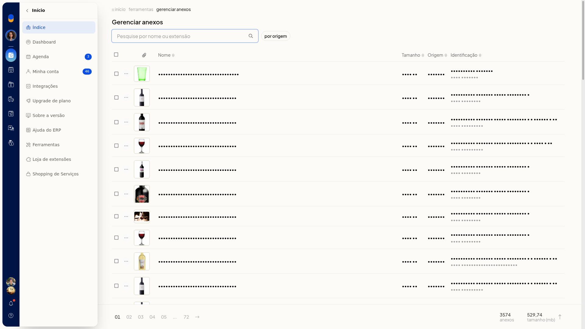

Gerenciar anexos
No ERP da Olist, Gerenciar Anexos localiza anexos pelo nome ou pela extensão e filtra por origem. Você confere a quantidade de anexos e o total em MB e, em cada linha, pode usar Visualizar produto ou Excluir anexo.
Instruções
- Acesse Início > Ferramentas > Gerenciar Anexos.
- Pesquise pelo nome ou pela extensão do arquivo, ou abra o filtro por origem e escolha uma origem:
- Sem filtro
- Clientes e Fornecedores
- Conta a pagar
- Conta a receber
- Contrato
- Lançamento de caixa
- Ordem de Servico
- Pedidos de Venda
- Produto
- Proposta comercial
Para fechar o filtro sem aplicar, clique em Cancelar.

- Na lista, confira Nome, Tamanho, Origem e Identificação. No rodapé, confira a quantidade de anexos e o total em MB.
- Abra o menu da linha e clique em Visualizar produto ou em Excluir anexo.
Resultado
A lista mostra os anexos localizados, com nome, tamanho, origem, identificação, o total em MB e as ações Visualizar produto e Excluir anexo em cada linha.